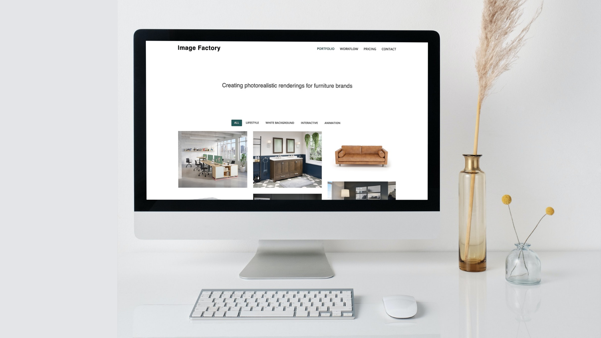

Image Factory

Project information
- Category: Agency Website - UX/UI/FE Redesign Case Study
- Client: Commercial Project
- Project date: 15 March, 2020
Problem: The current company’s website is outdated and has confusing navigation. Business mission is unclear with a poor message to the clients. Contact page isn’t trustworthy and doesn’t call to action.
Solution: By redesigning and rebranding the website in a minimalistic and modern way to help clients learn more about the Image Factory business and the company’s services.
Tools: Adobe XD | Visual Studio Code | Bootstrap4 | GitHub | AWS | Miro | Zoom
Timeline: 6 month - individual commercial project